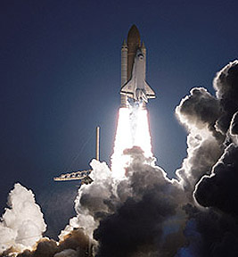
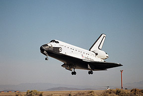

The Shuttle Program 1981 - 2012
The history of the Space Transportation System (STS), the official name for the Space Shuttle Program, developed by the National Aeronautics and Space Administration (NASA), began formally on January 5, 1972, when President Richard Nixon approved the development of a reusable space transportation system. In particular, it approved the development of a Space Shuttle, a piloted spacecraft that could be boosted into orbit by a reusable launch vehicle and which could return to Earth like an airplane, ready to be used again with only limited refurbishing. The Space Shuttle was the first reusable spacecraft ever built. The first Space Shuttle was named Enterprise after the starship in "Star Trek". That ship never went into space. The first actual launch was on April 12, 1981, when the Columbia spent two days in space and returned home safely. On January 28, 1986, a leak in the joints of one of two solid rocket boosters attached to the Challenger orbiter caused the main liquid fuel tank to explode 73 seconds after launch, killing all seven crew members. The Shuttle program was grounded for more than two years while NASA and its contractors redesigned the solid rocket boosters and implemented management reforms to increase safety. On September 29, 1988, the Shuttle successfully returned to flight. Since that day through mid-2001, NASA has safely launched 79 Shuttle missions.
Astronaut John Glenn, the first American to orbit the Earth, returned as the oldest man ever to reach space as a member of the crew of Discovery on a nine-day mission in late 1998. The 77-year-old astronaut helped deploy the Spartan solar-observing spacecraft, the Hubble Space Telescope Orbital Systems Test Platform, and perform investigations on the aging process and on space flight. On February 1, 2003, Columbia broke apart during re-entry. All seven crew members were killed in the accident. Once again, the space shuttle program came to a screeching halt. An investigation determined that one of the shuttle's thermal tiles had been damaged during takeoff, resulting in failure of the protective shield when the shuttle returned to the atmosphere. Equipment and procedures have again been modified and shuttle flights resumed in the Summer of 2005. In 2012 the Shuttle Program was officially retired and the remaining orbiters were placed on display at different locations around the country.